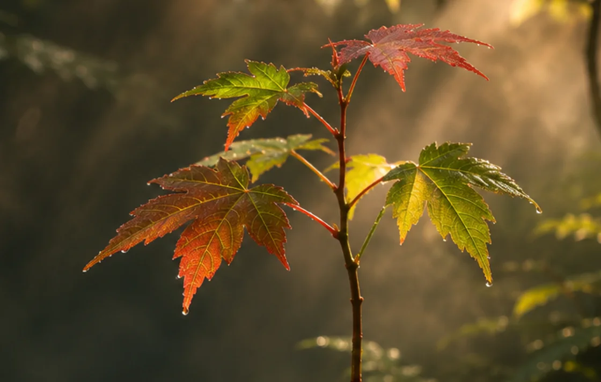

The practice / Observation
Care as
an art of time.
Bonsai and penjing begin with living material, careful attention, and respect for change. The design is an intention, not an entitlement.
01 / Cultivation
Begin with
what is real.
A specimen portrait should show the actual tree, soil, and container as they are. Records distinguish observation from hypothesis and interventions from plans.

Look longer.Illustrative botanical study

Imagine later.Stone selection · future study
02 / The art of arrangement
Landscapes
in miniature.
Penjing composition, bonsai form, rock, negative space, and proportion offer artistic directions. They remain suggestions until they can be reconciled with the biology of each living tree.
View the Atelier